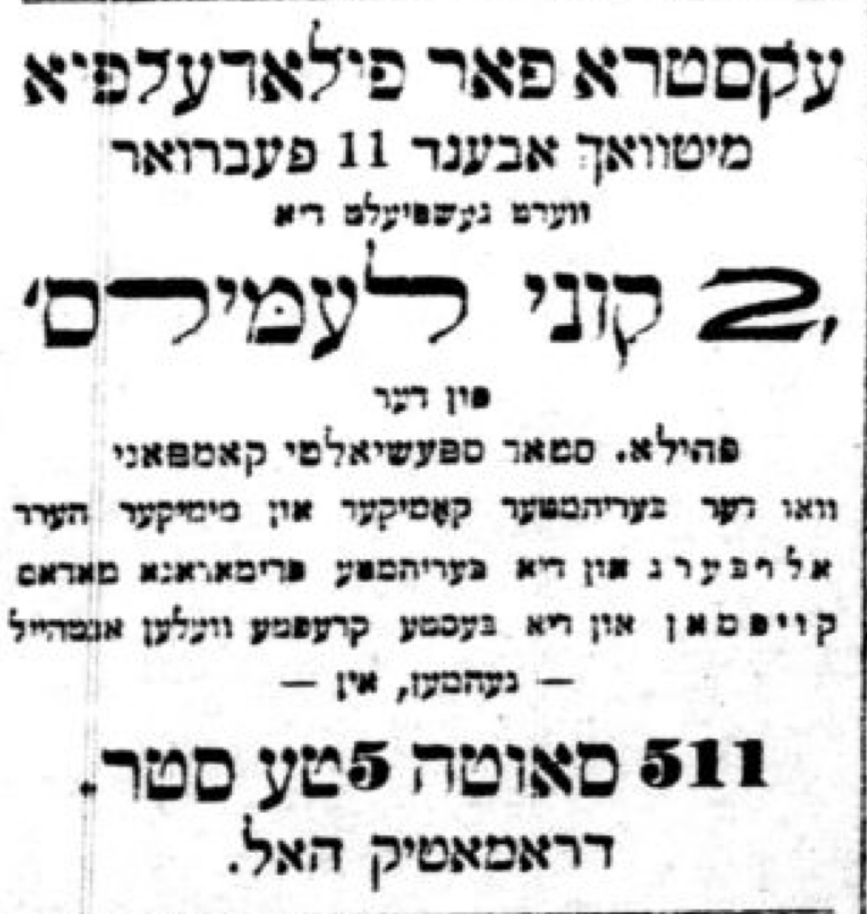
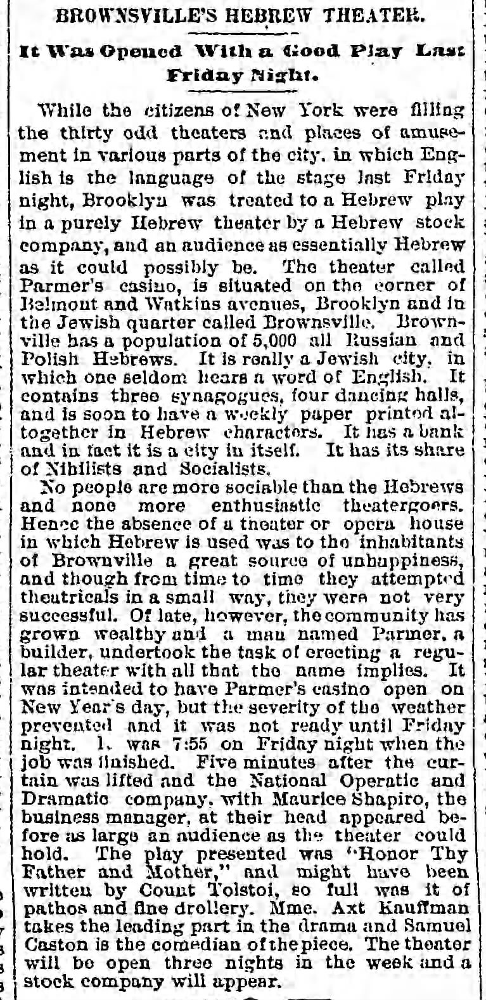

10 October 19th, 1946
Link to Forverts edition
How I appeared for the first time in the The Two Kuni Lemels1. - The actor Jacob Frank. - An offer to play in a theater in Brownsville2. - Ten dollars a week3.
The whole time that I yearned to be a professional actor, I was drawn to New York. There was the center of Yiddish theater; there the greatest Jewish actors played there, and I really wanted to play with them. But at the same time that my desire to play with them in New York was so great, I was still afraid of them, but in general the city of New York did not scare me much4.
And it was no wonder that I was so frightened of them, of the famous actors of that time. There was something about them that really plunged you into fear and yet really stirred the imagination; They had a innumerable fans, who were ready to “jump into fire and water”5 for them; All the walls were covered with their pictures, and even their names were wrapped in something unusual: Abba Schoengold called himself “Yaffa-Zahav”6 - that’s how he translated his name to Hebrew, so that it would sound like nice and shiny. And James P. Adler called himself no other name than the “Nesher HaGadol”7 And when he used to came down with his troupe to a “province-town”8, a picture of an eagle with two heads was printed on his posters, along with a warning to other others who were playing in the provinces:
– Fly away, little birds - the great eagle is here!
That was usually how the wording was…
Ah, what tales were told about the great actors and their caprices!
Nu, it was indeed no wonder that I was frightened to come to them in New York, even though I was really drawn there…
That’s why I didn’t go to try my luck in New York, but I came back to Philadelphia from the farm in Bridgeton, and there I met the actor Jacob Frank, who then ran a barber shop. He was a very good actor, Jacob Frank, an excellent comedian, but he had no ambition in the slightest. And even more, of that, he was pretty lazy and he never had any desire to really study a role.
In his certainty that when he goes out on the stage, everything would be fine and he would be able to “cope”9, he neglected everything. But with his talent was able to get away with a lot of things10. And you can say, that in a better “theater-atmosphere” Jacob Frank would certainly have been more prominent and he would certainly have occupied a more honorable place on our Jewish stage, and his talent would have developed better.
But it was not destined for him to be in a better “theater–atmosphere.” And that’s how he lived out all his years, and is now completely gone from the world11 and he has been forgotten.
Together, Frank and I established a little theater company that we called the “Star Specialty Club”12. And the manager of the club, I remember, was a young man from Philadelphia named Staller, a cigar maker, who was studying medicine and later become a doctor13.
Whenever we could and wherever we were allowed, we gave concerts, staged scenes, sang, and danced. We were satisfied that we were playing theater, and we looked forward to the opportunity when we would achieve what we wanted.14.
By chance, at that time, the anarchists turned to us with a request that we should give a benefit performance for the Fraye Arbeter Shtime15, which was published out of New York. We were assured that David Edelstadt himself, the editor of the Fraye Arbeter Shtime, will come to the performance from New York. And needless to say, when Frank and I heard about it, we were enthusiastic about it. And soon we were studying hard with all the members of our club to really learn Goldfaden’s play The Two Kuni Lemels well. The fake Kuni Lemel was played by Frank, and I played the real Kuni Lemel.

I will never forget that performance for the rest of my life. It was the first time I remember playing theater where they wrote about it afterwards in the newspaper. I was really delighted that I had already achieved such a level, even though at the same time I was afraid that Edelstein especially, khalilah16, would not enjoy it.
But Edelstein did enjoy our performance in Philadelphia; he affirmed this in the speech he gave between acts of the play, and afterwards in what he wrote in the “Fraye Arbeter Shtime”, and with this writing he put us all in a very good mood.
For a long time, we went through such tumult in the “Star Specialty Club” of ours, and it didn’t really matter to us that we didn’t have much luck. The point was that we had the opportunity to play theater, and we even had our own fans, just like the stars in New York. And that alone is no small thing.
Among our fans, I recall, there was one named Herman. He was working as a cloak-operator, “Columbus’ craftsman,” as those who took up tailoring in America were called at that time17. And he, Herman, was a strong supporter18 of Frank’s, and since he was a bit of a dreykop19 he already had a plan that he would grab Frank, and with him [Frank], leave for Baltimore, because he [Herman] had a lot of relatives and landslayt20 there. And he was sure, that there they would accomplish lots of great things, and they will both make golden business with the theater.
I am describing all these details here simply because, I believe, that it is worth getting knowing about, in order to have an sense of those types who hung around the theater, and how such chaos and such mayhem ruled the Yiddish theater in the “provincial cities”21.
Of all the dreams that Herman had when he grabbed Frank and took him from Philadelphia to Baltimore, nothing came of it. The Jews in Baltimore could not be taken by storm, as Herman had originally imagined. And on top of that, Frank “played a trick” on him and in Baltimore, he fell in love with a beautiful girl, and in his love his head was so twisted that playing theater was no hardly in his mind at all…
But Herman didn’t give up. He had long decided that he must accomplish something in the Yiddish theater and show what he is capable of. And when he came back to Philadelphia from Baltimore “with baytshel,”22 as we used to say in Ukraine, he teamed up with a certain “sign-painter,” whose name was Shapiro. He, Shapiro, was also a great lover of Yiddish theater, and in addition just as much of a dreykop as Herman, and he didn’t have any plans anyways. But soon he a plan for me:
– You want, we should all go in together?23 - he says to me, – You want New Yorkers to start talking about you and the earth will quake for you24, ah?… Are you coming with us to Brownsville?!
– What’s in Brownsville? - I asked.
– What do you mean, “What’s in Brownsville?”?! - Shapiro said excitedly to me as if he were about to curse me. - You don’t know what Brownsville is? Brownsville is a growing Jewish city, people are building it up, and the Jews will delight in having a Yiddish theater. You will be carried around proudly on your head25…
He did not have the slightest doubt that this would indeed be the case. And so that there would be no doubt for me either, he continued to reply to show there was something real and tangible on top of just the fantasy.

– First of all, - he said, - when it comes to a theater, where to play, you don’t have to dizzy yourself26. There is a Jew in Brownsville, whose name is Parmer, and he has built a casino, truly something first class. He built his casino on Pitkin Avenue, and that in and of itself is so small thing. Now’s here’s something to really persuade you - Pitkin Avenue!… That’s one down. And now the other: you will get ten dollars a week!
When I heard this, I didn’t believe my own ears.
– Ten dollars a week!…
I really didn’t expect such good fortune then, and I thought to myself, that this was nothing else but something that had fallen from heaven for me.
At that time - I must confess - I had already fallen in love with a girl. The girl’s name was Suzi Schafer27, and she was so charming, and a quiet/soft and affable girl. She came to America from Balta, and I got to know her when she became a member of our club and she played Yiddish theater together with us. It was precisely her quietness and shyness28 that attracted me to her, and I fell deeply in love with her. It took me a long time to get up the courage to tell her. And when she, in her own quiet and very modest way, told me her feelings, that she was also in love with me just as I was with her, I was the happiest person in the world.
And so it goes without saying that when they made me the offer to go from Philadelphia to Brownsville to play Yiddish theater, it really did not occur to me to go anywhere without her…
And so, it turned out like this: Together with the dark-haired, charming girl Suzi Schafer, with whom I was so deeply in love that I could not part with her in any way, I, with many hopes, left for Brownsville. And I was sure that it was going to be good, because Brownsville is close to New York, and that alone was really tempting to me, because I wanted to be near the city that was the center of Yiddish theater in America…
In the 1960s, this was made into an Israeli film called The Flying Matchmaker.↩︎
Neighborhood in Brooklyn that was extremely Jewish through the 1950s.↩︎
$10 in the 1890s equates to roughly $340 today (2023)↩︎
Unclear if this is a correct translation - that he wasn’t scared of NYC.↩︎
implies they would do anything for them; “come hell or high water” these fans are ready to defend their actors.↩︎
“Beautiful Gold” in Hebrew, a direct translation of Schoengold: schoen <-> yaffa and gold <-> zahav↩︎
“The Great Eagle” in Hebrew, since “Adler” means “eagle” in German.↩︎
A town outside of the major cities↩︎
As in, he’ll just figure it out when he gets on the stage!↩︎
This may not be a correct translation, but it’s the right vibe.↩︎
He passed away in 1942, according to his Leksikon entry, in Los Angeles where he settled when he became older and ill.↩︎
סטאַר ספּעשעלטי קלאָב↩︎
This was Max Staller, a prominent anarchist and physician. Read more about him in Appendix A↩︎
It’s worth noting that, according to the book Jewish Quarter of Philadelphia: A History & Guide 1881-1930, the “Star Specialty Club” troupe would sometimes play at the old fire station at 512 S 3rd St, right above South St.↩︎
“The Free Voice of Labor”; Anarchist Yiddish newspaper↩︎
God forbid↩︎
a very common profession in the new world!↩︎
big fan↩︎
Literally “spinning head,” an idiom that refers to a schemer/swindler. They talk so much they spin your head around.↩︎
aka, landsmen - people from the same region in the old country↩︎
not New York↩︎
means, “came back empty-handed”↩︎
I’ve rephrased from an idiom that doesn’t translate well↩︎
I changed this from “tumult in the world for you”. It’s a conversational idiom - implies, you want to be famous in NYC?!↩︎
Almost certainly idiom for “they will love you”↩︎
implying, you don’t have to go crazy looking for somewhere↩︎
סוזי שעיפער↩︎
the word Sam uses translates to “withdrawal”; I think he is referring to her introversion↩︎